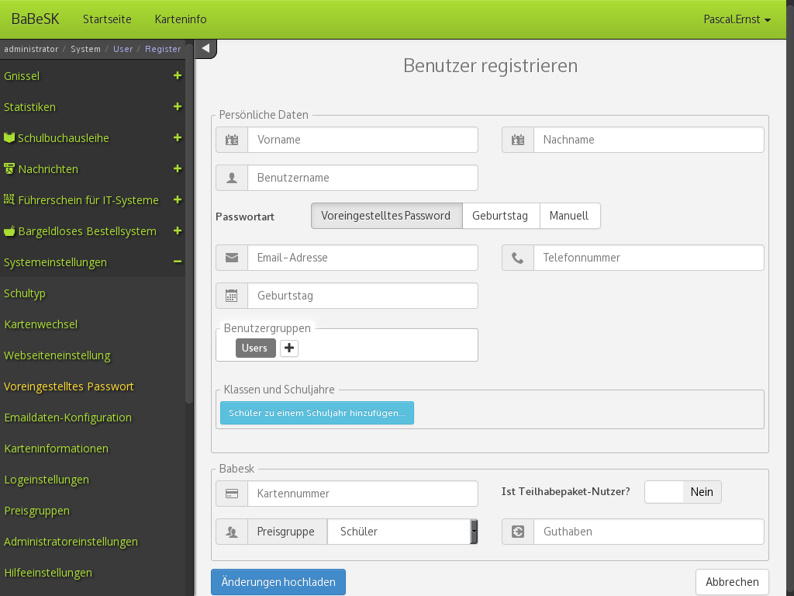

Bargeldloses Bestellsystem für die Schulkantine
Babesk is a cashless ordering system for school canteens, started 2010 in a computer science project group in school. With time the amount of active contributors decreased, while interest in the program itself increased. Soon I had the role as project lead. I implemented a framework allowing modularity for parts of the system and access control for groups of users. This led to many additional Modules. Schbas, for example, is a system for book lending in school and is a joint effort by the computer science project group. Kuwasys is a system with which pupils can choose their courses, programmed by me. The system is used by some schools in Lower Saxony, Germany.
C++ Qt Debugger for Risc-binaries